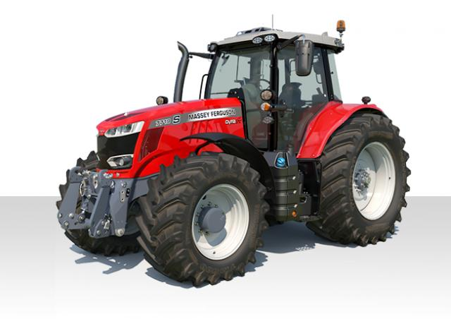
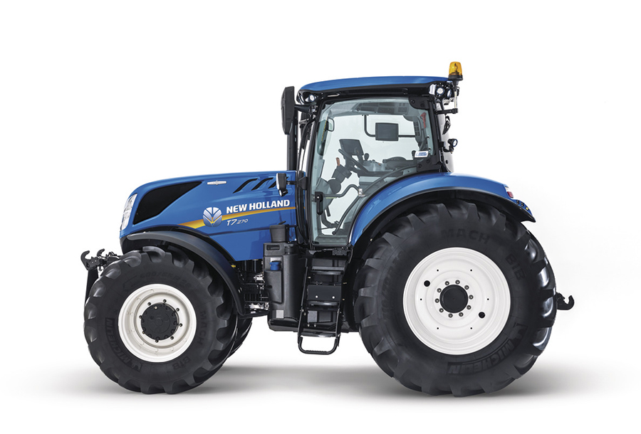
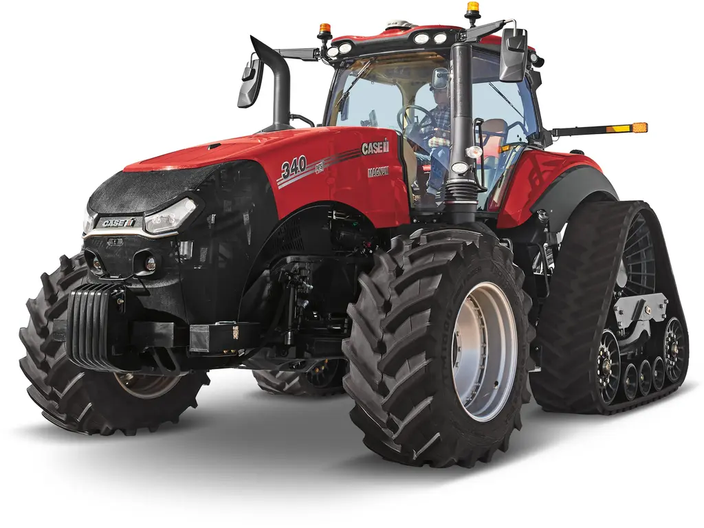
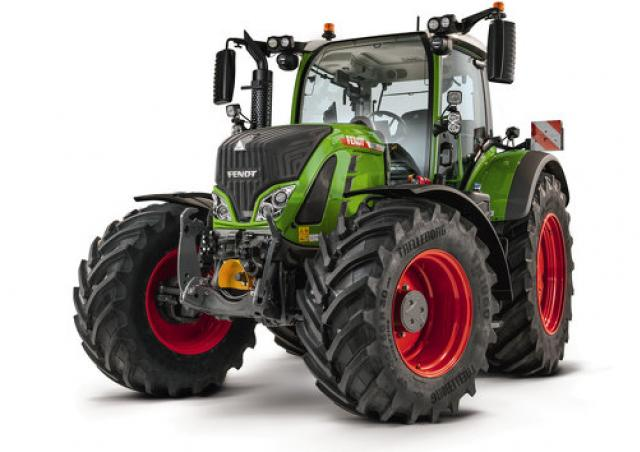

tracteur

John Deere 6155M
Puissance et fiabilité réunies avec le John Deere 6155M : un tracteur robuste, performant et prêt à relever tous vos défis agricoles

Massey Ferguson 7719 S
Travaillez plus efficacement avec le Massey Ferguson 7719 S : un concentré de technologie et de puissance pour une productivité maximale sur le terrain

New Holland T7.270
Confort, performance et polyvalence : le New Holland T7.270 est l’allié idéal pour tous vos travaux agricoles, quelle que soit la saison

Case IH Magnum 340
Dominez les grands espaces avec le Case IH Magnum 340 : une machine puissante et fiable pour maximiser vos rendements sans compromis

Fendt 724 Vario
Profitez de la précision allemande avec le Fendt 724 Vario : un tracteur intelligent et économique pour une agriculture moderne et rentable